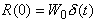

|
|
|
Белый шум - случайный стационарный
процесс с постоянной на всех частотах спектральной плотностью
мощности: W(w)
= W0
= const. Корреляция белого шума равна нулю всюду, кроме
точки t =
0, где она равна  (Нем.): (Фр.): Bruit /m/ blanc |